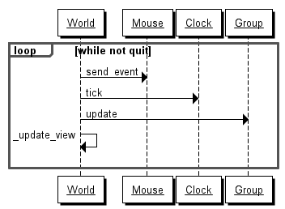
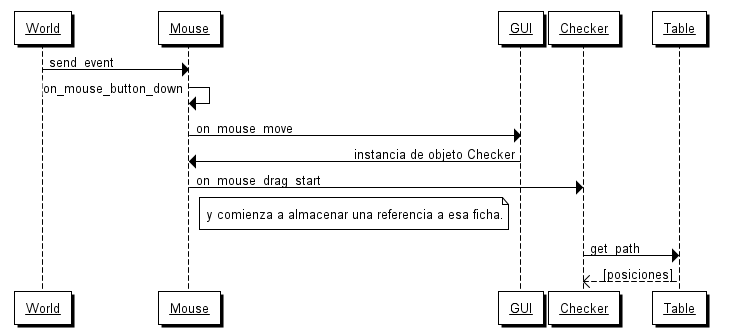
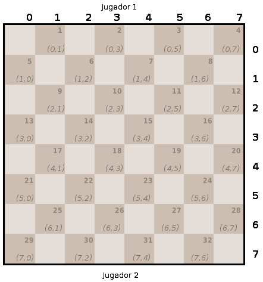
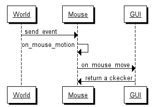
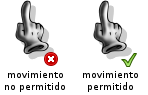

Este documento es una reseña breve del funcionamiento del juego Another Checkers Game. Se utiliza como punto de partida para nuevos programadores y para investigar la forma de mejorar su funcionalidad.
Si quiere realizar cambios en el código del programa le recomendamos leer este documento y consultar el código a la vez; dado que ambos tratan sobre la misma estrategia pero en diferente profundidad.
Como se busca que el videojuego sea totalmente interactivo, mostrando animaciones o transiciones, se ha optado por actualizar la pantalla de juego en base a un bucle, como en los juegos de acción.
El objeto encargado de contener al bucle principal es World, este objeto
contiene el método loop y una referencia a un objeto Clock para
mantener la velocidad constante en diferentes equipos.
En la jerarquía de objetos, World es responsable de actualizar la
pantalla, mantener la velocidad constante del juego y propagar eventos.
El siguiente diagrama muestra el orden de las llamadas e interacción entre objetos del bucle principal:

La mayor parte del comportamiento del programa se encuentra inspeccionando
el método send_event de la clase Mouse.
Cuando el objeto Mouse recibe la notificación del evento
MOUSEBUTTONDOWN intercambia mensajes con los objetos de la
pantalla, y en caso de que alguno de estos componentes se
pueda arrastrar, entonces lo almacena internamente.
El método interno de Mouse almacena en el atributo widget_on_drag
la referencia a la ficha que espera comenzar a mover.

Siguiendo el diagrama anterior, imagine una situación donde el usuario
hace click sobre una ficha. El objeto World envía el mensaje
send_event a Mouse. Mouse detecta que ha seleccionado una
ficha cuando le responde GUI le devuelve una instancia a objeto
Checker.
Luego, Mouse busca conocer a que posiciones podrá mover esa pieza. Para
ello sirve la llamada al método get_path del objeto Table.
La respuesta de Table menciona todas las posiciones en donde podrá
colocar esta pieza en caso de realizar un movimiento. Es importante observar
la estructura de este valor. Es una lista con todos los casilleros que puede
utilizar.
A continuación se muestran algunos ejemplos:
Si la pieza solo puede avanzar a dos casilleros vacíos:
[[(4, 5)], [(4, 7)]]
Si solo puede avanzar a uno (similar al anterior pero (4, 7) está ocupada:
[[(4, 5)]]
Si está en una situación similar a las anteriores, pero una pieza en la posición (3, 4) se puede comer. La repuesta podría ser de la siguiente forma:
[[(4, 5), (3, 4)], [(4, 7)]]
Es decir, la lista tiene tantos elementos como caminos posibles. Cada camino está representado en una lista de casilleros. Cada casillero está representado por dos números: una fila y una columna.
La siguiente imagen muestra cómo están enumeradas cada una de las celdas del tablero:

Dentro del juego resultan útiles las dos numeraciones, note que las celdas que se pueden ocupar se identifican por un solo número. Mientras todas las posiciones de la tabla, independientemente de si se pueden utilizar o no, se identifican por tuplas de la forma (fila, columna).
Realiza una tarea similar al evento de pulsar el Mouse, solo
que aquí el evento se utiliza para transmitir significado visual
al jugador.
Cuando el usuario mueve el mouse, en todo momento se consulta si
hay un objeto debajo del cursor, y en caso afirmativo, se consulta
al objeto que se encuentra bajo el cursor si éste es un objeto que
se puede pulsar (atributo can_click) o arrastrar (atributo
can_drag). Estas consultas se realizan para alternar el cursor
del mouse conforme a estas situaciones. Por ejemplo, si el objeto
se puede pulsar como un botón, el puntero del mouse se convierte
en un cursor activo, en caso contrario se coloca un puntero de
mouse traducional.

Si el objeto Mouse ya ha detectado con anterioridad la
pulsación sobre un elemento entonces comienza a arrastrarlo.
El jugador solo podrá realizar el mejor movimiento permitido. Para asegurar esta funcionalidad se sigue la siguiente estrategia:
Así, cuando el jugador inicia su turno, ya se creará un diccionario con los mejores movimientos para realizar.
Este diccionario tendrá la siguiente apariencia:
{
<Piece instance>: [[(1, 2)], [(2, 3)]],
<Piece instance>: [[(2, 3)], [(2, 5)]]
}
Note que solo encontrará caminos para los mejores movimientos, si un jugador puede mover 5 fichas, pero solo con 2 realiza los mejores movimientos, entonces el diccionario solo tendrá 2 elementos.
En una segunda instancia, se consulta el diccionario para saber que movimientos se permiten.
Estas decisiones se verán en la interfaz del juego, si no se permite mover una ficha el cursor del mouse mostrará una marca roja, y cuando se pueda mover el mouse tendrá una marca verde:
